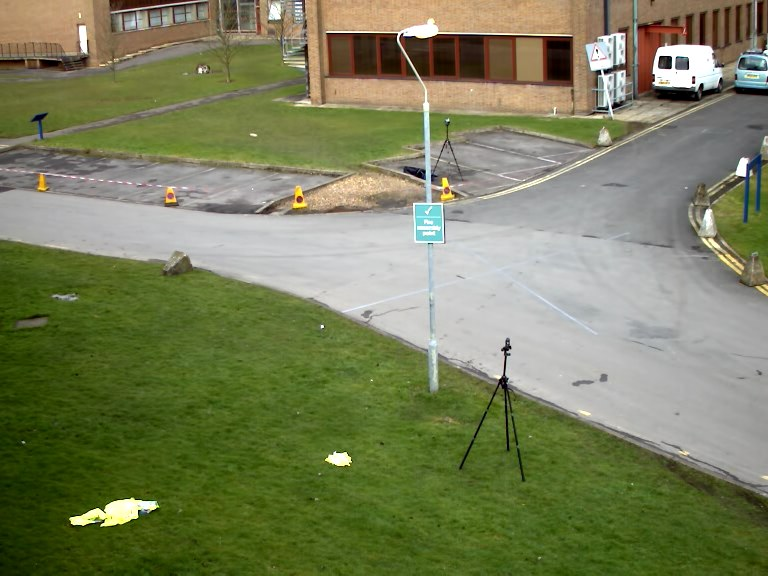
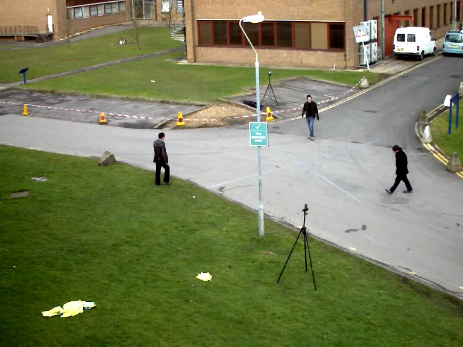
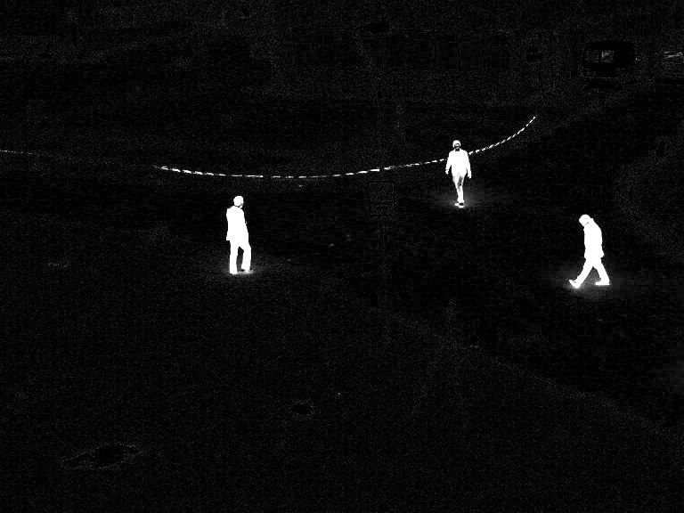
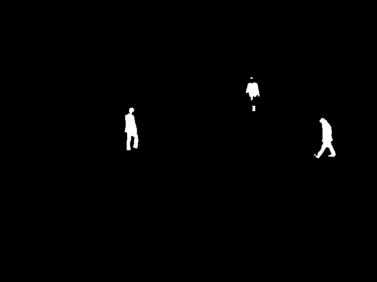
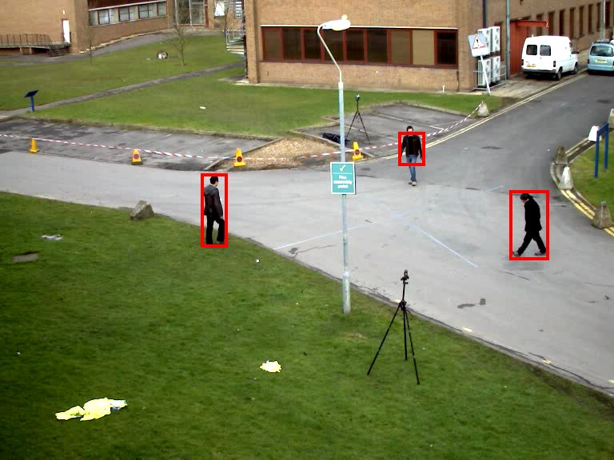
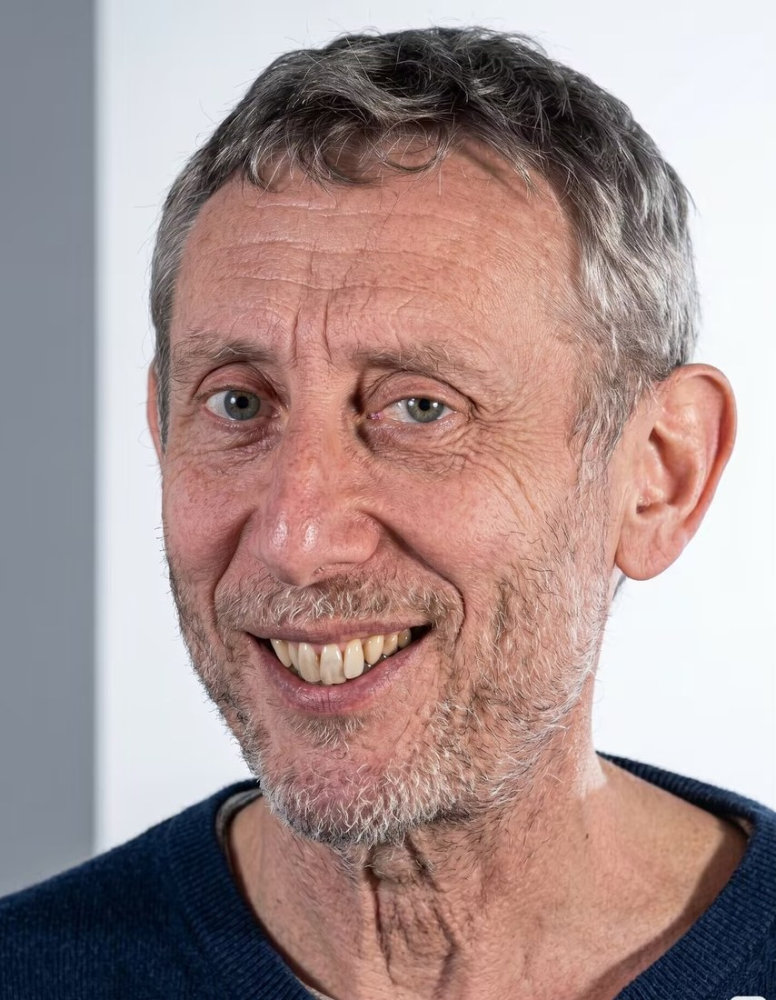
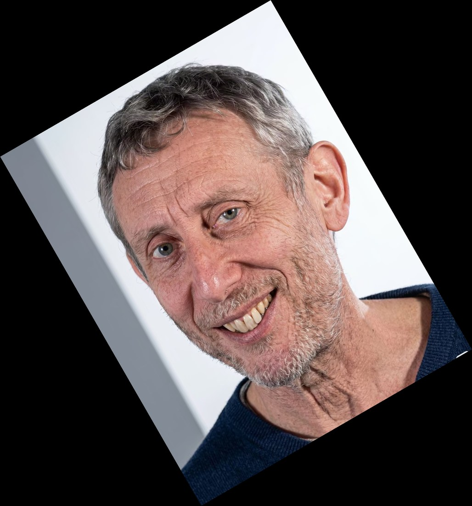
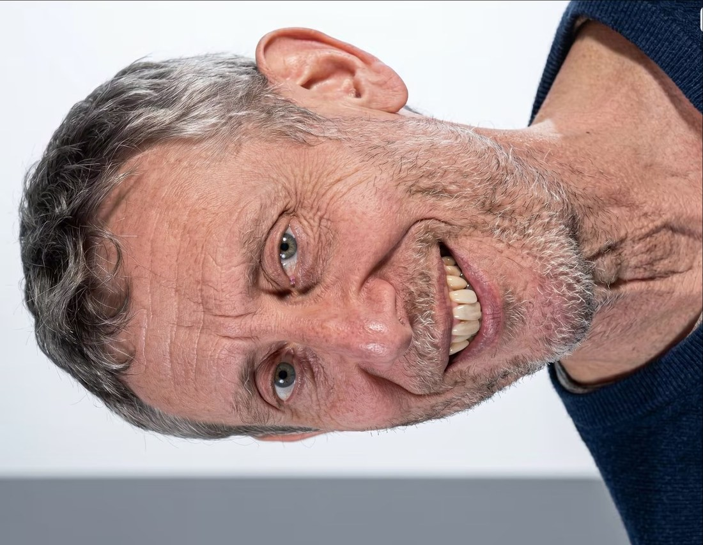

ASSIGNMENT SET 01—02 / DIGITAL IMAGE PROCESSING
图像实验台
固定场景检测、几何变换与低照度增强的对照实验
就绪 · 示例数据已载入
01 / A
图像相减检测
768 × 576 · OTSU对无人背景与当前场景逐像素作差并取绝对值，用大津法自动阈值分割，再经开闭运算和连通域标记，定位进入场景的人。





OTSU 阈值79 / 255
前景像素占比0.81 %
连通域 / 面积3 · 1444 / 648 / 1430
01 / B
图像旋转
NEAREST / BILINEAR反向映射遍历输出像素，30° 时分别用最近邻和双线性插值采样；90° 的源坐标恰好落在整数像素上，无需插值。



最近邻的斜边呈阶梯状锯齿；双线性边缘过渡平滑。90° 旋转长宽互换，无插值损失。
02 / A
低照度图像增强
512 × 512 · RGB以原始清晰图像为参考构造“低照度 + 高斯噪声”的降质图像，比较全局均衡、局部自适应与幂次校正三种策略。
灰度直方图
64 BINS · OUTPUTPSNR / SSIM 以原始清晰图像为参考；载入自己的图像时没有参考图，只统计前四项。